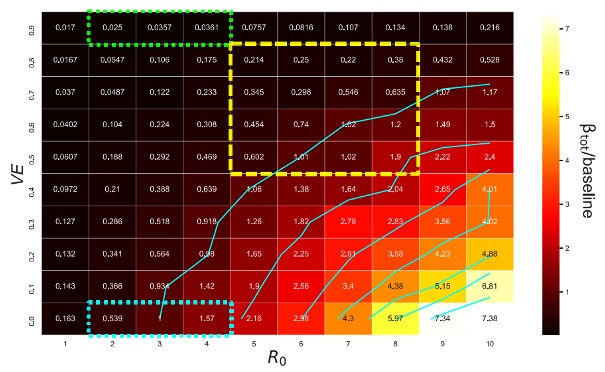
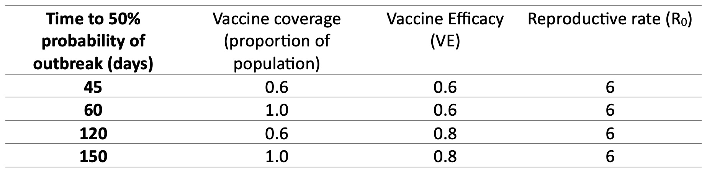

How does vaccination and quarantine methods impact the spread of the Delta strain?
The Problem
This post examines the results of a study relating to the spread of the Delta variant of COVID-19. Specifically, what quarantine and vaccination methods are effective at dealing with the spread of this strain in nations with low-tolerance border quarantine systems.
This area of interest was investigated by Zacherson and others in 2022. Due to the virality of the Delta variant, it was unknown how the level of vaccination and rate of virus reproduction impacts the spread of the virus. As well as, how the Delta variant impacts the number and severity of outbreaks in the community.
This is of interest because the methods used in containing outbreaks of high risk COVID-19 variants impacts the ability of countries with low-tolerance border quarantine systems (e.g. Australia, New-Zealand, and China) to reopen borders without risking the safety of members within the community.
Analysis
The results and figures shown in this post are referencing Zacherson et al. 2022, who uses an individual based model in conjunction with a branching process model to estimate the risk of community outbreak under certain conditions relating to vaccine efficacy, coverage, reproduction rate and number of breaches.

Figure 1: Relative outbreak potential depending on vaccine efficacy, coverage and reproduction rate from simulated quarantine breach events.
It was found that outbreak potential (βtot/baseline) is heavily dependent on vaccine efficacy (VE) and the rate of reproduction of the virus (R0). As we can see in Figure 1, the risk of outbreak potential is quite high until vaccination rates of between 70 and 80 percent are achieved. After which the likelihood of an outbreak drops significantly (a phenomenon known as heard immunity).
In Figure 1 the blue dotted box represents the baseline situation (before Delta strain). This baseline situation uses a level of vaccination and reproductive rate consistent with conditions in Australia and New Zealand at the time (Grout et al., 2021). The green dotted box represents situations relate to quarantine pathways that were vaccinated before the existence of Delta strain. The yellow dotted box represents a range of possible scenarios after the emergence of the Delta variant. This box in Figure 1 shows that unless levels of vaccination are extremely high, outbreaks in instances of the Delta variant are still likely.
Below we see the expected amount of days until the probability of outbreak into the community reaches 50 percent. This table is a summary of a figure produced by Zacherson and others in the 2022 paper.
 Table 1: Time until probability of outbreak reaches 50 percent.
Please note the reproductive rate here is chosen to be 6 as this is near the average reproductive rate estimated by Zacherson and others for the Delta strain. From this table we can see that the larger the proportion of the population that is vaccinated the lower the risk of an outbreak in a given amount of time. However, maybe more important is the vaccine efficacy, which represents the level of effectiveness of the vaccination. For greater values of this the time taken to reach a 50 percent probability of outbreak is significantly higher.
We can see from both Figure 1 and Table 1 that higher vaccination efficacy, coverage, and low reproductive rates lead to the lowest number and severity of outbreaks of the Delta strain of COVID-19.
Conclusion
The findings from the 2022 paper by Zacherson and others are as follows:
- Vaccination reduces the risk of infection and quarantine breach but can’t eliminate this risk entirely.
- The rise of the Delta variant decreases vaccine effectiveness and increases risk of quarantine breach.
- Unless a large proportion of the population is vaccinated quarantine breaches remain a threat.
- If quarantine, vaccination, and/or other controlling methods are not utilised risks are extremely large.
This means that countries such as Australia with low-tolerance quarantine policies must utilise a range of techniques in order to effectively contain the spread of the Delta strain of COVID-19.
References
Zachreson, C. et al. (2022) ‘Covid-19 in low-tolerance border quarantine systems: Impact of the delta variant of SARS-COV-2’, Science Advances, 8(14). doi:10.1126/sciadv.abm3624.
Grout, L. et al. (2021) ‘Failures of quarantine systems for preventing COVID‐19 outbreaks in Australia and New Zealand’, Medical Journal of Australia, 215(7), pp. 320–324. doi:10.5694/mja2.51240.